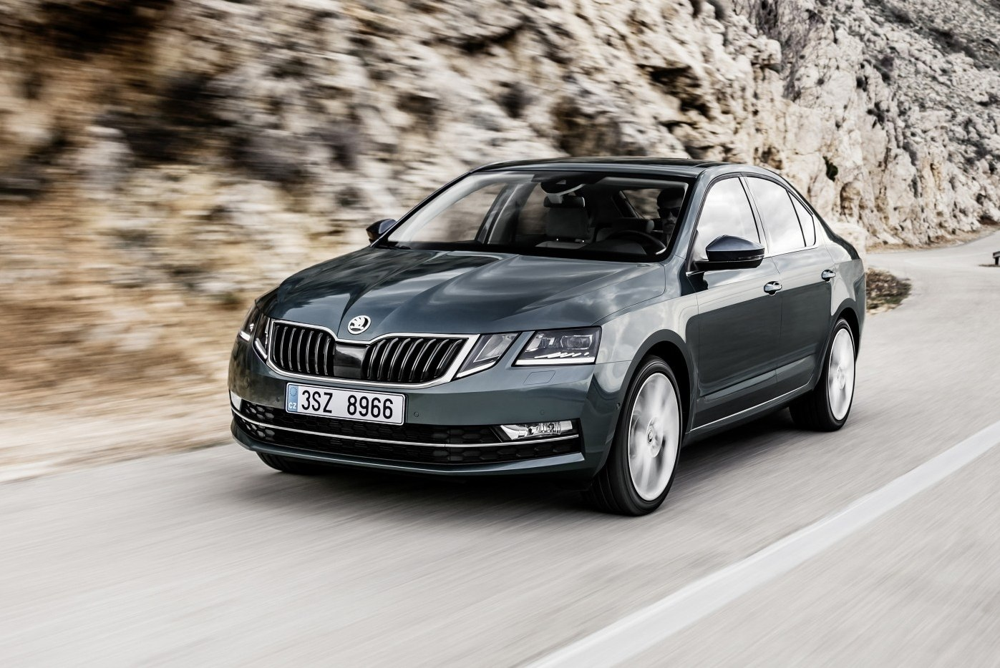
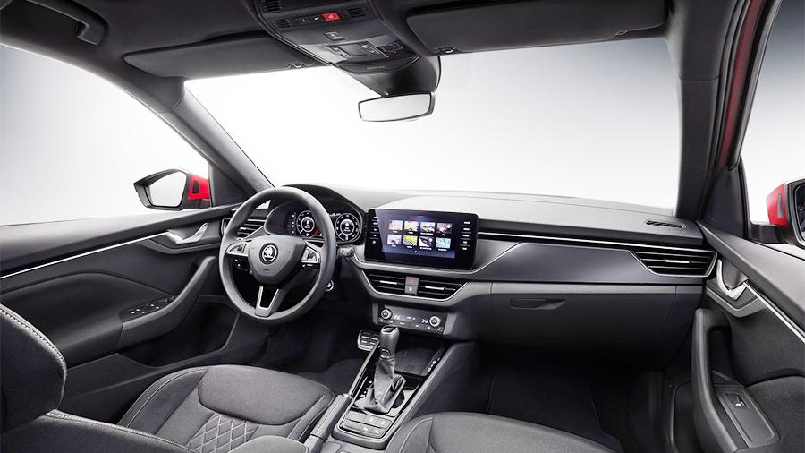
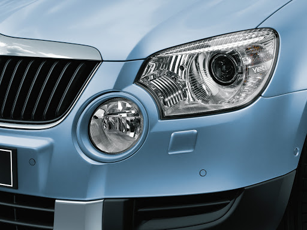
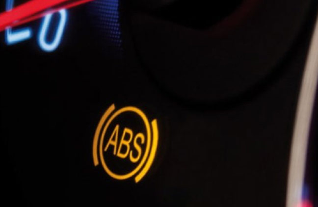
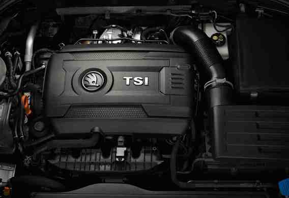
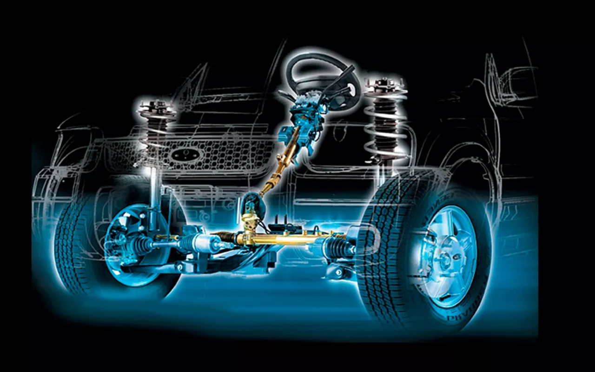
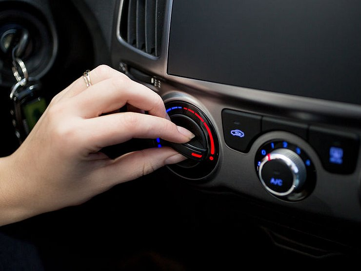

Skoda Octavia A7
Предлагаем активацию скрытых функций в автомобилях на платформе MQB. Краткий перечень того ,что можно сделать приведен ниже, по более детальному обращайтесь к диагносту по месту. Список Активируемых функций представлен ниже...
Для получения более конкретной информации свяжитесь с нами.


Приборная панель
- Активация предупреждения об оставленном ключе зажигания.
- Активация отображения свободного места в баке.
- Активация теста стрелок при включении зажигания.
- Отключения предупреждения о не пристегнутом ремне безопасности.
- Таймер круга
- Деактивация предупреждения о включенном зажигании при открытии водительской двери.
Блок комфорта
- Отключение ограничителя шторки панорамной крыши.
- Активация закрытия задней двери с брелка и с кнопки в салоне.
- Активация меню “Сервисный режим дворников” (возможно только на ГУ SWING).
- Активация звукового подтверждения о постановке на охрану.
- Активация функции комфортной посадки для сидений с электрорегулировкой.
- Активация вывода на экран магнитолы визуальной картинки при включении парктроника.
- Активация пункта вкл./откл. дневных ходовых огней (ДХО) в меню магнитолы.
- Активация дотирки капель дворниками (работает в движении и при температуре выше +5).
- Активация работы сенсоров дверей при работающем двигателе (при наличии системы бесключевого доступа Kessy, дополнительно к №9).
- Активация работы кнопок ключа при работающем двигателе.
- Складывание зеркал только удержанием кнопки с брелка при закрытии авто.
- Опускание правого зеркала при включении задней передач.
- Автоматическое закрытие стекол при дожде, плюс пункт управления в Болеро. (только авто 2013 и 2014 мг)
- Перенастройка срабатывания омывателя фар – установка временной задержки для его срабатывания в целях экономии омывающей жидкости.
- Изменение сервисного положения дворников.
- Увеличение времени работы обогрева лобового/заднего стекол.
- Модификация значений температуры подогрева сидений.
- Изменение количества включения сигнала поворота в комфортном режиме.


Освещение
- Активация работы ДХО в режиме ближнего света (на галогенной оптике).
- Активация/деактивация функции “Corner” (подсветка поворотов с помощью ПТФ).
- Активация работы габаритов в стиле USA: передние указатели поворотов работают в пол накала.
- Выключение ДХО при поднятии ручнике.
- Перенастройка стояночных огней для работы по кругу.
- Модификация функции Coming/Living Home: отключение из функции ксенона/добавление ПТФ.
- Увеличение яркости передних/задних ПТФ/ламп заднего хода примерно на 25% (только при установленных светодиодных лампах).
- Активация работы задних габаритных огней совместно с передними ДХО (скандинавский свет).
- Активация правого заднего противотуманного фонаря (кроме Octavia A7 FL).
- Активация работы передних ПТФ вместе с передними ДХО.
- Притухание или моргание ресничек ДХО при включении указателей поворота (кроме Octavia A7 FL).
- Активация включения ДХО только в режиме AUTO.
- Адаптация светодиодных ламп в подсветке номерного знака.
- Выключение освещения в салоне при открытии крышки багажника.
- Активация режима стробоскопов – при моргании дальним светом отключаются противотуманные фары/ДХО/ближний галоген, если они включены.
Вспомогательные функции
- Активация камеры заднего вида.
- Изменение скорости отключения парковочного ассистента.
- Разблокировка работы MirrorLink в движении.
- Изменение схемы звучания аудиосистемы CANTON.
- Полное отключение функции Start/Stop.
- Изменение загрузочной картинки Болеро на VRS/Scout/Greenline.
- Активация системы контроля давления в шинах TPSM 2 (только на авто с системой ESC).
- Активация возможности чтения SMS на устройствах второго поколения.
- Активация системы DriveGreen.
- Активация Video in Motion – возможность просмотра видео в движении (только для ГУ Columbus).
- Изменение схемы звучания штатной аудиосистемы. Раскроет истинный потенциал звучания штатного ГУ.
- Деактивация АМ диапазона радио.
- Модификация изображения автомобиля на VRS в экране Болеро (Парктроник, Состояние автомобиля).
- Активация режима бортового компьютера “Учебный автомобиль” (кроме Columbus).

ABS/ESP
- Активация функции автоматического торможения.
- Активация возможности ограничения/полного отключения системы ESC – ESC Sport/ESC выкл.
- Активация ассистента подъема в гору на автомобилях с МКПП.
- Перенастройка системы подавления вибраций при старте (порог срабатывания системы ASR на старте).
- Настройка ассистента подъема в гору.
- Активация автоматического включения системы ESC при достижении скорости в 100 км/ч, если она была отключена.
- Активация/настройка расширенной электронной блокировки дифференциала – XDS.
Двигатель
- Переключение режима работы ЭБУ двигателя CJSA 1.8 TFSI на полный привод для увеличения крутящего момента.
- Настройка АКПП Aisin.
- Чип-тюнинг КПП DSG.
- Чип-тюнинг
- Устранение задержки отклика на нажатие педали акселератора на турбированных бензиновых двигателях TSI.


Рулевое управление
- Изменение параметрической характеристики усилителя рулевого управления.
- Обновление прошивки рулевой рейки.
- Настройка системы TSC (Torque Steer Compensation) – компенсация увода вбок. Действует при резком наборе скорости и не дает машине отклоняться от прямолинейного движения.
Климатическая установка
- Активация автоматического включения обогрева руля (только для Octavia A7 FL).
- Активация функции памяти уровня подогрева сидений при постановке на охрану.
- Индикация скорости вентилятора отопителя при его работе в режиме AUTO.
- Активация функции памяти рециркуляции климата.
- Активация управления климатической установкой на MIB2 (до 2017 мг).
